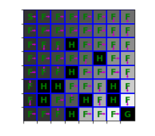
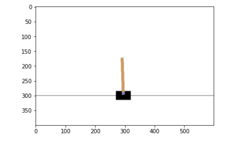
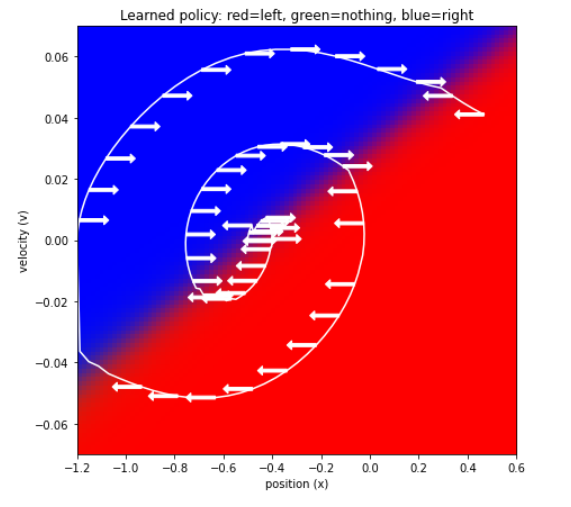

RL-value iteration: Frozen Lake
This project is for value iteration, both state values, and state-action values,
for a model-free environment where we have no access to the probabilities in the
Frozen lake environment on gym. This project is done for the practical reinforcement learning
course held by the Higher School of Economics, Russia.
You can see how the agent has learned the right way to the goal in a 8*8 environment form every states:

Here is the GitHub link of this project:
Deep Cross Entropy Methode:
The first part of this project is learning to control an inverted pendulum using cross entropy method on gym environment.

The second part of the project is for the mountain climbing car to reach the goal on top of the mountain
via deep cross entropy method. As it is pictured in the graph bellow you can see that the car learns
the best policy and reaches the goal using this method.

Here is the GitHub link of this project:
Building a web page like Google Keep
This project was the Front-end development workshop's project held by "Made in Lobby 2021".
The concepts covered were javascript, HTML, and CSS. I was an attendee in this workshop. This project has
the aim of making a webpage like "Google Keep." To do so, first adding notes were distinguished using javascript,
then some stylings were added like the ones in google keep itself. Here are some pictures of how this webpage would
look like in different devices having different sizes.
This is how the webpage looked finally:

Here is the GitHub repository of this project:
The Brick Breaker Game by Python,
(CS106A project, Code in place 2020, C. Piech & M. Sahami)
The main idea behind this project was to use Python merely to creat a game.
Here is a demo of how the game works:
Some of other projects:
Design and Implementation of an Object Avoidance and Path Planning Algorithm for TurtleBot3 in ROS,
(ROS & Gazebo training online course project, Maktabkhooneh)
3RPS Parallel Manipulator kinematics, dynamical modeling, and motion/force control by MSC Adams and Matlab,
(Parallel Robots course project, Prof. Hamid D. Taghirad)
Designing a Fuzzy Logic Controller for Car Parallel Parking by MATLAB Simulink,
(Fuzzy Logic and Fuzzy Artificial Neural Network Control course project, Prof. Ali Ghaffari)
AL5B Serial Manipulator kinematics, dynamical modeling, and motion/force and impedance control by MATLAB,
(Control in Robotics course project, Prof. S. A. A. Moosavian)
Designing a program for ordering car prices in a MySQL database, (Advanced Python online course,
Web scrapping project, Maktabkhooneh)
Car Price Prediction via Linear Regression, SVM, KNN and ANN by MATLAB,
(Machine Learning course project, Dr. Babak Nasersharif)
Deep Neural Network for Image Classification,
(Neural Networks and Deep Learning online course project, Coursera, Andrew Ng)